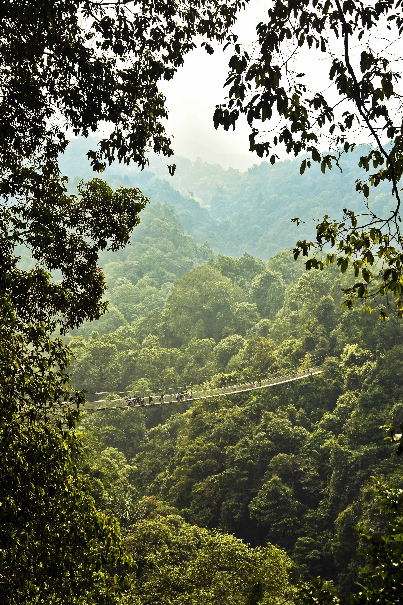
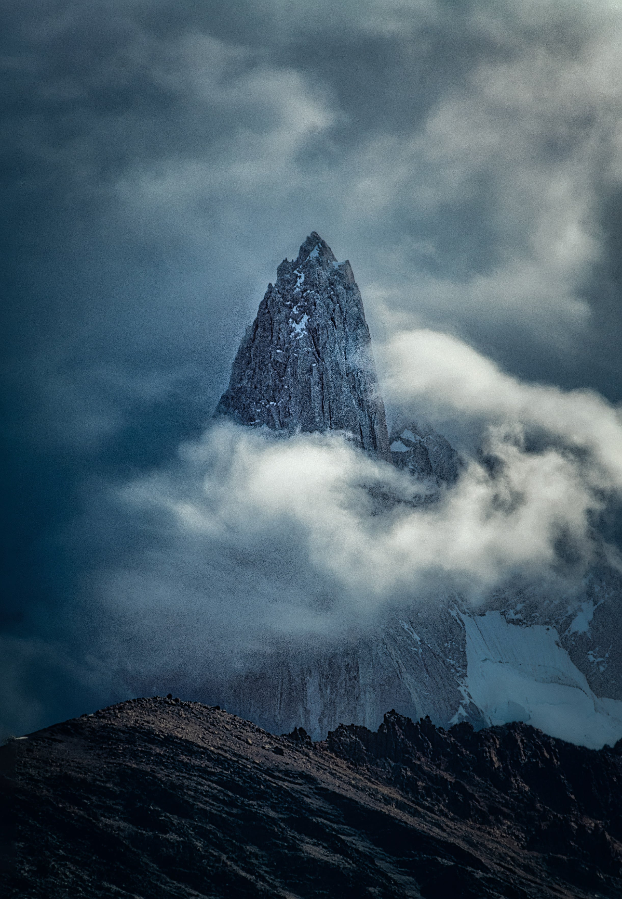
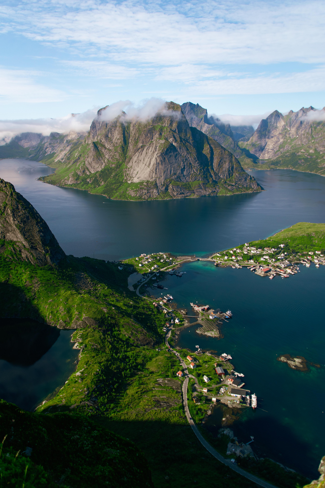
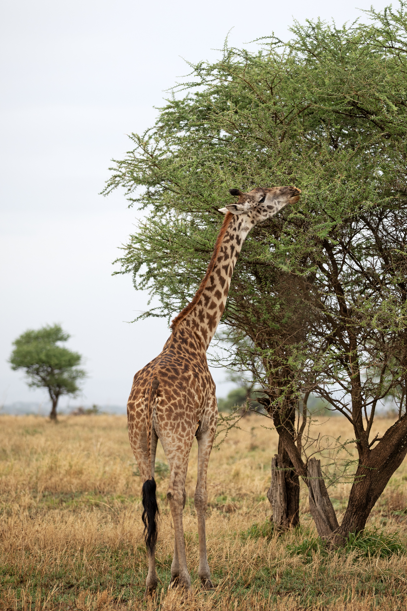
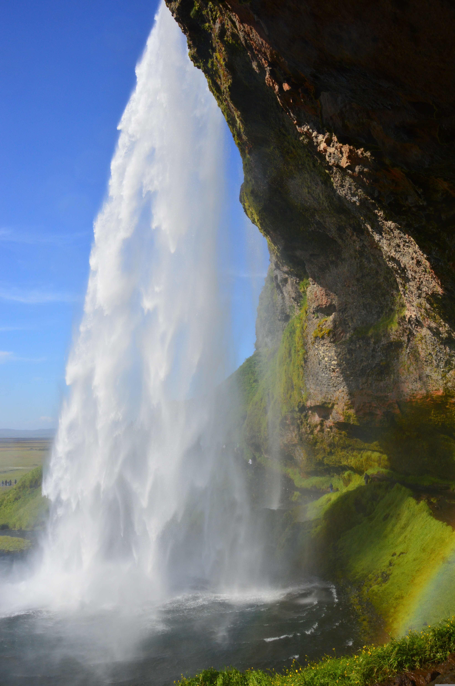
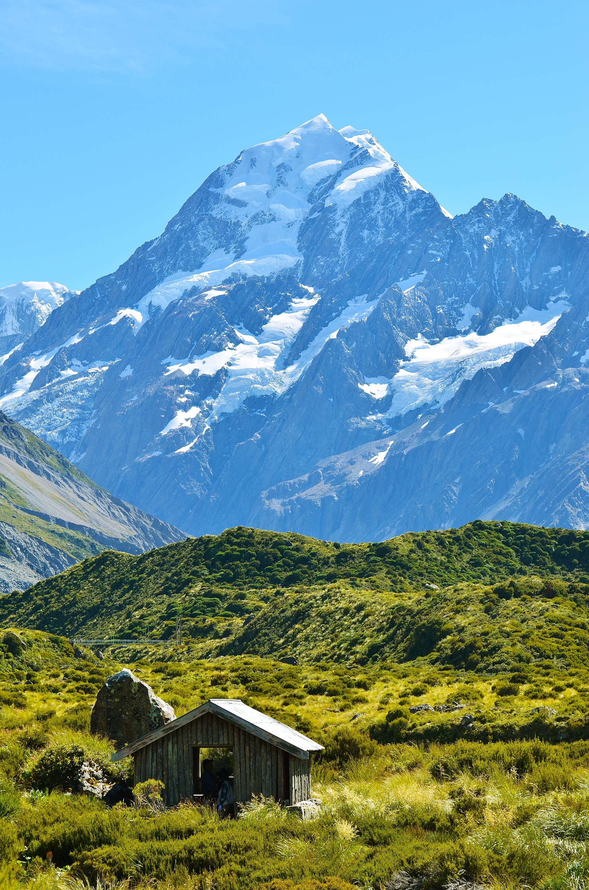

Reisemål
Utforsk ulike reisemål!

Strand-destinasjoner
Strender er blant verdens mest populære reisemål, og det er lett å forstå hvorfor. Det er noe universelt tiltrekkende ved kombinasjonen av sol, sand og hav – enten man søker aktiv moro med surfing og vannsport, eller bare vil ligge i ro og lytte til bølgene. Kystlinjer finnes i alle varianter, fra dramatiske klippestrender til brede, flate sandflater med turkist vann, og hver av dem tilbyr sin egen stemning og opplevelse. For mange er en strandreise ikke bare en ferie, men en måte å koble av fra hverdagen og finne tilbake til noe enkelt og avslappende.

Bali, Indonesia
En tropisk øy med vakre strender, surfemuligheter og avslappende atmosfære.

Maldivene
Krystallklart vann og hvite sandstrender gjør dette til et perfekt sted for luksus og ro.

Santorini, Hellas
Unike strender med vulkansk sand med fantastisk utsikt og solnedganger.

Phuket, Thailand
Populær destinasjon med livlige strender, god mat og spennende aktiviteter.

Miami, USA
Kombiner strandliv med storby – kjent for lange strender og livlig stemning.

Gold Coast, Australia
Perfekt for surfing med lange strender og moderne byliv rett ved havet.
Storby-destinasjoner
Storbyer er blant de mest spennende reisemålene i verden, og tiltrekker seg mennesker med sin energi, kultur og endeløse muligheter. Det er noe spesielt med pulsen i en storby – kombinasjonen av travle gater, imponerende arkitektur, shopping, mat og kjente severdigheter skaper opplevelser man sent glemmer. Hver by har sin egen identitet og atmosfære, enten det er moderne skylines, historiske bygninger eller livlige bydeler fulle av mennesker og aktivitet. For mange handler en storbyferie om å oppleve noe nytt, utforske ulike kulturer og kjenne på følelsen av å være midt i verdens liv og bevegelse.

Paris, Frankrike
Romantisk storby kjent for ikoniske landemerker og kultur.

Tokyo, Japan
En spennende blanding av moderne teknologi og tradisjon.

New York, USA
Byen som aldri sover, full av liv, shopping og severdigheter.

London, Storbritannia
Historisk storby med kjente attraksjoner og variert kultur.

Dubai, UAE
Luksus, futuristisk arkitektur og unike opplevelser.

Barcelona, Spania
Livlig by med strand, arkitektur og fantastisk mat.
Natur-destinasjoner
Naturen er jordens mest storslåtte reisemål. Fra mektige fjell og tette regnskoger til stille innsjøer og brusende fossefall – naturopplevelser gir en følelse av ærefrykt og ro som ingen by kan gi. Å reise ut i naturen handler om å koble av fra støyen, puste frisk luft og oppleve verden slik den egentlig er.

Amazonas, Brasil
Verdens største regnskog med utrolig biologisk mangfold og elvereiser.

Patagonia, Argentina
Dramatiske fjell, isbreer og endeløse stepper ved verdens ende.

Fjordene, Norge
Majestetiske fjorder, grønne åser og stille vann midt i norsk natur.

Serengeti, Tanzania
Storstilte savanner og den berømte store migrasjonen av dyr.

Island
Nordlys, geysirer, vulkaner og svarte sandstrender i ett og samme land.

New Zealand
Grønne daler, dramatiske fjell og uberørt natur på to spektakulære øyer.